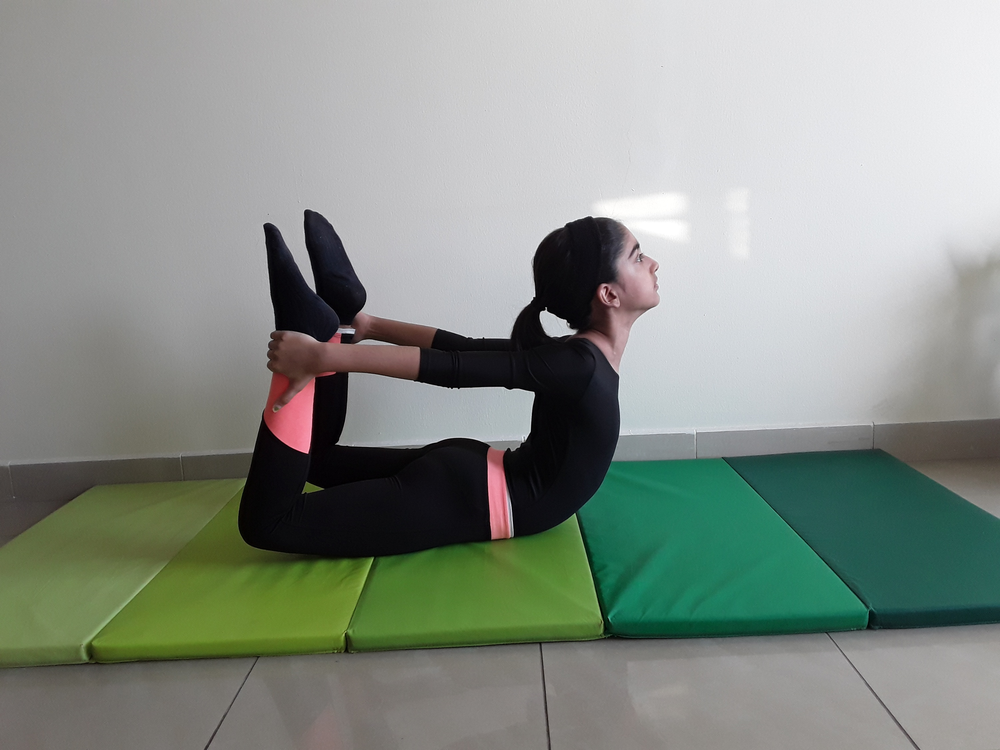

BOW POSE

Steps to perform Bow Pose
- Lie flat on your stomach. Keep your chin on the mat and your hands at your sides. Your hands should be palm up.
- Exhale while you bend your knees. Bring your heels as close as you can to your buttocks. Your knees should be hip-width apart.
- Lift your hands and take hold of your ankles. Be sure to grab the ankle and not the top part of the feet. Your fingers should wrap around the ankles, but your thumb does not. Keep your toes pointed.
- Inhale and lift the heels away from the buttocks, keeping a hold of your ankles. Simultaneously, lift your head, chest, and thighs away from the mat. As you lift, rotate your shoulders safely and comfortably. At this point, only your core should touch the mat, while the rest of your body is lifted towards the ceiling.
- Draw your tailbone into the mat to deepen the stretch. You should feel the stretch in your back as the weight and balance shifts to your core. Your chest and shoulders should feel open.
- Look straight ahead and hold the pose for about 15 seconds while you focus on stretching, breathing, and balancing.
- Exhale and release the pose. Lower your head, chest, thighs, and feet back towards the mat. Let go of your ankles and return to your hands to your side. Relax for a few seconds and repeat the pose as needed or continue to your next pose.